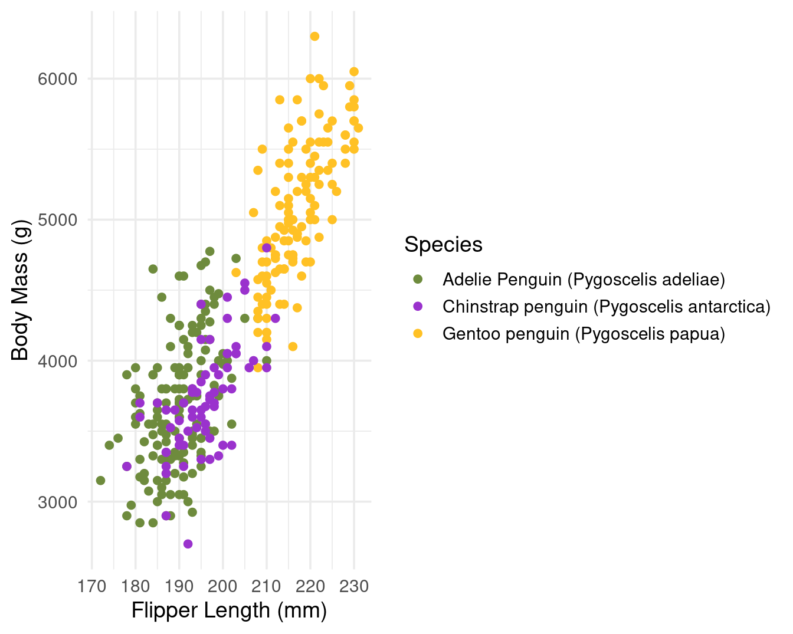

Day 3 Block 8: Quarto

Quarto is a new and improved version of RMarkdown that makes working with different formats and programming languages easier. If you have ever used RMarkdown, the transition is easy.
One of the main benefits of Quarto is that it uses a consistent set of rules across all types of output. In R Markdown, the way you format documents can change depending on what you are creating. For example, when making slides in R Markdown, the "xaringan" package uses three dashes to create new slides, but in other formats, three dashes create a horizontal line instead. Similarly, the "distill" package has its own unique layout options that don’t work with "xaringan." Quarto simplifies this by providing one standard way to format all types of documents.
Quarto also supports more programming languages than R Markdown and works with different code editors. While R Markdown is mainly designed to be used in the RStudio program, Quarto can be used not only in RStudio but also in other popular code editors, like Visual Studio (VS) Code and JupyterLab. This makes it easier for people to use Quarto with different languages and tools.
This chapter will show you the benefits of using Quarto if you are an R user. It will guide you on how to set up Quarto, explain the key differences between Quarto and R Markdown, and teach you how to use Quarto to create reports, presentations, and websites.
7.39 Background
Quarto is a widely-used tool for creating automated, reproducible, and share-worthy outputs, such as reports. It can generate static or interactive outputs, in Word, pdf, html, Powerpoint slides, and many other formats.
A Quarto file combines R code (or other programming code) and text such that the script actually becomes your output document. You can create an entire formatted document, including narrative text (can be dynamic to change based on your data), tables, figures, bullets/numbers, bibliographies, etc.
Documents produced with Quarto, allow analyses to be included easily - and make the link between raw data, analysis & and a published report completely reproducible.
With Quarto we can make reproducible html, word, pdf, powerpoints or websites and dashboards1
How it works
Starting from version 2022.07.1, RStudio comes with Quarto already installed.
To check which version of RStudio you have, go to the top menu and click on RStudio > About RStudio. If your version is older than 2022.07.1, you should update it by reinstalling RStudio. Instructions for updating RStudio can be found in Chapter 1. After updating, Quarto should be automatically installed.
Once Quarto is installed, you can create a new document by clicking File > New File > Quarto Document. This will bring up a menu similar to the one used to create an R Markdown document
Choose a title, author, as well as your default output format (HTML, PDF, or Word). These values can be changed later. Click OK, and RStudio will create a Quarto document with some placeholder content.

This document contains several sections, each of which we will discuss below. First, though, let’s skip to the finish line by doing what’s called rendering our document. The Render button at the top of RStudio converts the Quarto document into whatever format we selected.
To make your document publish - hit the render button at the top of the doc
Quarto parts
As you can see, there are three basic components to any Quarto file:
YAML
Markdown text
R code chunks.
YAML Metadata
The YAML section is the very beginning of an R Markdown document. The name YAML comes from the recursive acronym YAML ain’t markup language, whose meaning isn’t important for our purposes. Three dashes indicate its beginning and end, and the text inside of it contains metadata about the R Markdown document. Here is my YAML:
---
title: "My Report"
output: html_document
---
As you can see, it provides the title, author, and output format. All elements of the YAML are given in key: value syntax, where each key is a label for a piece of metadata (for example, the title) followed by a value in quotes.
In the example above, because we clicked that our default output would be an html file, we can see that the YAML says output: html. However we can also change this to say pptx or docx or even pdf_document. (https://quarto.org/docs/output-formats/all-formats.html)
Can you edit the YAML in the Rmarkdown file in the markdown folder to have your name as author? Try changing the output to a different file type.
Code chunks
Quarto documents have a different structure from the R script files you might be familiar with (those with the .R extension). R script files treat all content as code unless you comment out a line by putting a pound sign (#) in front of it. In the following code, the first line is a comment while the second line is code.
```{r}
# Import our data
data <- read_csv("data.csv")
```
In Quarto, the situation is reversed. Everything after the YAML is treated as text unless we specify otherwise by creating what are known as code chunks. Each chunk is opened with a line that starts with three back-ticks, and curly brackets that contain parameters for the chunk { }. The chunk ends with three more back-ticks.
Quarto treats anything in the code chunk as R code when we knit. For example, this code chunk will produce a histogram in the final document.
Some notes about the contents of the curly brackets { }:
They start with ‘r’ to indicate that the language name within this chunk is R. It is possible to include other programming language chunks here such as SQL, Python or Bash.
After the r you can optionally write a chunk “name” – these are not necessary but can help you organise your work. Note that if you name your chunks, you should ALWAYS use unique names or else R will complain when you try to render.
After the language name and optional chunk name put a comma, then you
can include other options too, written as tag=value, such
as:
-
eval: false to not run the R code
-
echo: false to not print the chunk’s R source code in the output document
-
warning: false to not print warnings produced by the R code
-
message: false to not print any messages produced by the R code
-
include: true/false whether to include chunk outputs (e.g. plots) in the document
-
out-width and out-height = size of output in final document e.g. out-width = “75%”
-
fig-width and fig-height: relative size of figure
-
fig-align = “center” adjust how a figure is aligned across the page
-
fig-show=‘hold’ if your chunk prints multiple figures and you want them printed next to each other (pair with out-width = c(“33%”, “67%”).
Question. If we wanted to see the R code, but not its output we need to select what combo of code chunk options?
Default options for showing code, charts, and other elements in the rendered versions of the document. In Quarto, these options are set in the execute field of the YAML. For example, the following would provide the outputs of code, but hide the code itself, as well as all warnings and messages, from the rendered document:
---
title: "My Report"
format: html
execute:
echo: false
warning: false
message: false
---In cases where you’re using Quarto to generate a report for a non-R user, you likely want to follow this setup of hiding the code, messages, and warnings but show the output (which would include any visualizations you generate).
However, you can also override these global code chunk options on individual chunks. If I wanted my document to show both the plot itself and the code used to make it, I could set echo = TRUE for that code chunk only:
The option is set within the code chunk itself. The characters #| (known as a hash pipe) at the start of a line indicate that you are setting options.
Text
This is the narrative of your document, including the titles and headings. It is written in the “markdown” language, which is used across many different software.
Below are the core ways to write this text. See more extensive documentation available on R Markdown “cheatsheets” at the RStudio website2.
New lines
Uniquely in R Markdown, to initiate a new line, enter *two spaces** at the end of the previous line and then Enter/Return.
Text emphasis
Surround your normal text with these characters to change how it appears in the output.
Underscores (_text_) or single asterisk (*text*) to italicise
Double asterisks (**text**) for bold text
Back-ticks (` text `) to display text as code
The actual appearance of the font can be set by using specific templates (specified in the YAML metadata).
Titles and headings
A hash symbol in a text portion of a R Markdown script creates a heading. This is different than in a chunk of R code in the script, in which a hash symbol is a mechanism to comment/annotate/de-activate, as in a normal R script.
Different heading levels are established with different numbers of hash symbols at the start of a new line. One hash symbol is a title or primary heading. Two hash symbols are a second-level heading. Third- and fourth-level headings can be made with successively more hash symbols.
# First-level heading / Title
## Second level heading
### Third-level heading
Bullets and numbering
Use asterisks (*) to created a bullets list. Finish the previous sentence, enter two spaces, Enter/Return twice, and then start your bullets. Include a space between the asterisk and your bullet text. After each bullet enter two spaces and then Enter/Return. Sub-bullets work the same way but are indented. Numbers work the same way but instead of an asterisk, write 1), 2), etc. Below is how your R Markdown script text might look.
Here are my bullets (there are two spaces after this colon):
* Bullet 1 (followed by two spaces and Enter/Return)
* Bullet 2 (followed by two spaces and Enter/Return)
* Sub-bullet 1 (followed by two spaces and Enter/Return)
* Sub-bullet 2 (followed by two spaces and Enter/Return) In-text code
You can also include minimal R code within back-ticks. Within the back-ticks, begin the code with “r” and a space, so RStudio knows to evaluate the code as R code. See the example below.
This book was printed on `r Sys.Date()`
When typed in-line within a section of what would otherwise be Markdown text, it knows to produce an r output instead:
This book was printed on 2026-05-30
Running code
You can run the code in an R Markdown document in two ways. The first way is by rendering the entire document. The second way is to run code chunks manually (also known as interactively) by hitting the little green play button at the top-right of a code chunk. The down arrow next to the green play button will run all code until that point.
The one downside to running code interactively is that you can sometimes make mistakes that cause your Quarto document to fail to knit. That is because, in order to render, a Quarto document must contain all the code it uses. If you are working interactively and, say, load data from a separate file, you will be unable to knit your document. When working in R Markdown, always keep all code within a single document.
The code must also always appear in the right order.
7.40 Self contained Reports
For a relatively simple report, you may elect to organize your R Markdown script such that it is “self-contained” and does not involve any external scripts.
Set up your Rmd file to 'read' the penguins data file.
Everything you need to run the R markdown is imported or created within the Rmd file, including all the code chunks and package loading. This “self-contained” approach is appropriate when you do not need to do much data processing (e.g. it brings in a clean or semi-clean data file) and the rendering of the R Markdown will not take too long.
In this scenario, one logical organization of the R Markdown script might be:
Set global knitr options
Load packages
Import data
Process data
Produce outputs (tables, plots, etc.)
Save outputs, if applicable (.csv, .png, etc.)
7.41 Exercise
Delete this content and replace it with your own. As an example, let’s create a report about penguins. Add the following content to a Quarto doc:
---
title: "Penguins Report"
author: "Phil"
output: html
execute:
echo: false
warning: false
message: false
---
```{r}
library(tidyverse)
```
```{r}
penguins_raw <- read_csv("https://raw.githubusercontent.com/UEABIO/data-sci-v1/main/book/files/penguins_raw.csv")
```
# Introduction
We are writing a report about the **Palmer Penguins**. These penguins are *really* amazing. There are three species:
- Adelie
- Gentoo
- Chinstrap
## Bill Length
We can make a histogram to see the distribution of bill lengths.
```{r}
penguins_raw |>
ggplot(aes(x = `Culmen Length (mm)`)) +
geom_histogram() +
theme_minimal()
```
```{r}
average_bill_length <- penguins_raw |>
summarize(avg_bill_length = mean(`Culmen Length (mm)`,
na.rm = TRUE)) |>
pull(average_bill_length)
```
The chart shows the distribution of bill lengths. The average bill length is `` `r average_bill_length` ``.ggplot
Size options for figures
fig.widthandfig.heightenable to set width and height of R produced figures. The default value is set to 7 (inches). When I play with these options, I prefer using only one of them (fig.width).fig.aspsets the height-to-width ratio of the figure. It’s easier in my mind to play with this ratio than to give a width and a height separately. The default value of fig.asp is NULL but I often set it to(0.8), which often corresponds to the expected result.
Size options of figures produced by R have consequences on relative sizes of elements in this figures. For a ggplot2 figure, these elements will remain to the size defined in the used theme, whatever the chosen size of the figure. Therefore a huge size can lead to a very small text and vice versa.
The base font size is 11 pts by default. You can change it with the
base_size argument in the theme you’re using.
penguin_colours <- c("darkolivegreen4", "darkorchid3", "goldenrod1")
plot <- penguins_raw |>
ggplot(aes(x=`Flipper Length (mm)`,
y = `Body Mass (g)`))+
geom_point(aes(colour=`Species`))+
scale_color_manual(values=penguin_colours)+
theme_minimal(base_size = 11)

To find the result you like, you’ll need to combine sizes set in your theme and set in the chunk options. With my customised theme, the default size (7) looks good to me.

When texts axis are longer or when figures is overloaded, you can choose bigger size (8 or 9) to relatively reduce the figure elements. it’s worth noting that for the text sizes, you can also modify the base size in your theme to obtain similar figures.
```{r fig.asp = 0.8, fig.width = 7}
plot + theme(base_size = 14)
# figure width stays the same, but modify the text size in ggplot
```
Size of final figure in document
With the previous examples, you could see the relative size of the elements within the figures was changed - but the area occupied by the figures remained the same. In order to change this I need out.width or out.height
Figures made with R in a R Markdown document are exported (by default in png format) and then inserted into the final rendered document. Options out.width and out.height enable us to choose the size of the figure in the final document.
It is rare I need to re-scale height-to-width ratio after the figures were produced with R and this ratio is kept if you modify only one option therefore I only use out.width. i like to use percentage to define the size of output figures. For example hre with a size set to 50%
```{r fig.asp = 0.8, fig.width = 7, out.width = "50%"}
plot
# The final rendered size of the image changes according to out.width
```
Static images
You can include images in your R Markdown:
Tables
Markdown tables
| Syntax | Description |
| ----------- | ----------- |
| Header | Title |
| Paragraph | Text |
Which will render as this
| Syntax | Description |
|---|---|
| Header | Title |
| Paragraph | Text |
gt()
The gt Iannone et al. (2023) package is all about making it simple to produce nice-looking display tables. It has a lot of customisation options.
penguins_raw |>
group_by(`Species`) |>
summarise(`Body Mass (g)`= mean(`Body Mass (g)`, na.rm = T),
`Flipper Length (mm)`= mean(`Flipper Length (mm)`, na.rm = T)) |>
gt::gt()| Species | Body Mass (g) | Flipper Length (mm) |
|---|---|---|
| Adelie Penguin (Pygoscelis adeliae) | 3700.662 | 189.9536 |
| Chinstrap penguin (Pygoscelis antarctica) | 3733.088 | 195.8235 |
| Gentoo penguin (Pygoscelis papua) | 5076.016 | 217.1870 |
You won’t be able to see these tables unless you try re-rendering your .qmd file.
Source files
One variation of the “self-contained” approach is to have Quarto “source” (run) other R scripts.
This can make your Quarto file less cluttered, simpler, and easier to organize. It can also help if you want to display final figures at the beginning of the report.
In this approach, the final Quarto doc simply combines pre-processed outputs into a document. We already used the source() function to feed R objects from one script to another, now we can do the same thing to our report.
The advantage is all the data cleaning and organising happens "elsewhere" and we don't need to repeat our code. If you make any changes in your analysis scripts, these will be reflected by changes in your report the next time you compile (knit) it.
source("scripts/your-script.R")Activity: Connecting scripts and reports
Create a new Quarto doc.
Create a new .R file
Save this (without changes) to the same folder as your
.Rprojfile and call itlinked_report_penguins.Rmd.
We will now source pre-written scripts for data loading and wrangling in your R project, just use the source command to read in this script - then you can call objects made externally - in this case a penguin plot - put the code block in and hit knit.
Useful tips
The working directory for .qmd files is a little different to working with scripts.
With a .qmd file, the working directory is wherever the qmd file itself is saved.
For example if you have your .qmd file in a subfolder
~/outputfiles/markdown.qmd the code for read_csv(“data/data.csv”) within
the markdown will look for a .csv file in a subfolder
called data inside the ‘markdown’ folder and not the root
project folder where the .RProj file lives.
So we have two options when using .qmd files
-
Don’t put the .qmd file in a subfolder and make sure it lives in the same directory as your .RProj file - that way relative filepaths are the same between R scripts and quarto files
-
Use the
herepackage to describe file locations - more later
Heuristic file paths with here()
The package here Müller (2025) and its function here() (here::here()), make it easy to tell R where to find and to save your files - in essence, it builds file paths. It becomes especially useful for dealing with the alternate filepaths generated by .qmd files, but can be used for exporting/importing any scripts, functions or data.
This is how here() works within an R project:
When the
herepackage is first loaded within the R project, it places a small file called “.here” in the root folder of your R project as a “benchmark” or “anchor”In your scripts, to reference a file in the R project’s sub-folders, you use the function
here()to build the file path in relation to that anchorTo build the file path, write the names of folders beyond the root, within quotes, separated by commas, finally ending with the file name and file extension as shown below
here()file paths can be used for both importing and exporting
So when you use here() wrapped inside other functions for importing/exporting (like read_csv() or ggsave()) if you include here() you can still use the RProject location as the root directory when rendering Quarto files, even if your markdown is tidied away into a separate sub-folder.
This means your previous relative filepaths should be replaced with:
```{r}
#| include: false
# READ DATA ----
penguins <- read_csv(here("data", "penguins_raw.csv"))
head(penguins)
```
You might want start using the here() from now on to
read in and export data from scripts. Make sure you are consistent in
whether you use here() heuristic file paths or relative
file paths across all .R and .qmd files in a project -
otherwise you might encounter errors.
Activity: Test yourself
Make any summary figure you want from the penguins (or any other) data with
ggplotMake a summary table with
summariseand make it beautiful withgt()Write a few sentences explaining what you are presenting
Knit the report to html
Use chunk options to optimise your figure layout and text and make it so that raw code and rendered outputs are visible. An example of literate programming
Hygiene tips
I recommend having three chunks at the top of any document
Global chunk options
All packages
Reading data
Common knit issues
Any of these issues will cause the qmd document to fail to knit in its entirety. A failed knit is usually an easy fix, but needs you to READ the error message, and do a little detective work.
Not the right order
plot(my_table)
my_table <- table(mtcars$cyl)Forgotten trails
: Missing “,”, or “(”, “}”, or “’”
Path not taken
The qmd document is in a different location the .Rproj file causing issues with relative filepaths
Spolling
Incorrectly labelled chunk options
Incorrectly evaluated R code
Visual editor
RStudio comes with a pretty nifty Visual Markdown Editor which includes:
Spellcheck
Easy table & equation insertion
Easy citations and reference list building
You can switch between modes with a button push, try it out!
7.42 Presentations
Quarto can also produce slideshow presentations. To make a presentation with Quarto, click File > New File > Quarto Presentation. Choose Reveal JS to make your slides and leave the Engine and Editor options untouched.
The slides you’ll make use the reveal.js JavaScript library under the hood, a technique. The following code makes a simple presentation:
---
title: "My First Quarto Presentation"
format: revealjs
---
## Slide 1: Introduction
- Welcome to my presentation
- Made with Quarto and Reveal.js
## Slide 2: Incremental Bullet Points
```{r}
#| include: false
library(tidyverse)
penguins_raw <- read_csv("https://raw.githubusercontent.com/UEABIO/data-sci-v1/main/book/files/penguins_raw.csv")
```
We are writing a report about the **Palmer Penguins**. These penguins are *really* amazing. There are three species:
:::{.incremental}
- Adelie
- Gentoo
- Chinstrap
:::
## Slide 3: Columns
:::{.columns}
::: {.column width="70%"}
```{r}
#| fig-height: 9
#| out.width: "120%"
penguin_colours <- c("darkolivegreen4", "darkorchid3", "goldenrod1")
penguins_raw |>
ggplot(aes(x=`Flipper Length (mm)`,
y = `Body Mass (g)`))+
geom_point(aes(colour=`Species`))+
scale_color_manual(values=penguin_colours,
labels = c("Adelie", "Chinstrap", "Gentoo"))+
theme_minimal(base_size = 20)+
theme(legend.position = "bottom")
```
:::
::: {.column width="30%"}
```{r}
penguins_raw |>
group_by(`Species`) |>
summarise(`Body Mass (g)`= mean(`Body Mass (g)`, na.rm = T),
`Flipper Length (mm)`= mean(`Flipper Length (mm)`, na.rm = T)) |>
gt::gt()
```
:::
:::7.43 Explanation of Key Features
Basic Structure: The YAML header (--- at the top) defines the presentation title and the format (revealjs for Reveal.js presentations).
Slides: Each slide starts with a new heading (e.g., ## Slide Title). Everything under that heading will appear on the same slide.
Incremental Bullet Points: Use {.incremental} to reveal bullet points one by one.
Columns: Use {.columns} to create multiple columns on a slide. Then, define each column with {.column} and set the width (e.g., "50%" for two equally sized columns).
7.44 Parameters
Parameterized reporting is a technique that allows you to generate multiple reports simultaneously. By using parameterized reporting, you can follow the same process to make 3,000 reports as you would to make one report. The technique also makes your work more accurate, as it avoids copy-and-paste errors.
Let's create a parameterized report using Quarto and the Palmer Penguins data. Parameterized reporting allows you to create dynamic reports that can change based on input parameters, such as species or island in this example.
We add parameters to the YAML header of your Quarto document. These parameters will control the species or island that the report focuses on:
7.44.1 Defining Parameters
In R Markdown, parameters are variables that you set in the YAML to allow you to create multiple reports. Take a look at these two lines in the YAML:
This code defines variables called species and island. You can use these variable throughout the rest of the Quarto document with the params$variable_name syntax, replacing variable_name with species or any other name you set in the YAML. For example, consider this inline R code:
params$species
Any instance of the params$species parameter will be converted to "Adelie Penguin (Pygoscelis adeliae)" when you knit it.
7.44.2 Parameterised Report
7.44.3 Create a Parameterized Report
Now, let's add R code to use these parameters for filtering and visualizing the data:
---
title: "Penguin Analysis Report"
format: html
params:
species: "Adelie Penguin (Pygoscelis adeliae)"
island: "Biscoe"
---
## Introduction
This report provides an analysis of the Palmer Penguins dataset. The current report focuses on the `` r "\u0060params$species\u0060"` `` species from "\u0060r params$island\u0060" island.
## Load and Filter Data
First, let's load the Palmer Penguins dataset and filter it based on the selected parameters.
```{r}
#| include: false
library(tidyverse)
library(gghighlight)
# Load the dataset
penguins_raw <- read_csv("https://raw.githubusercontent.com/UEABIO/data-sci-v1/main/book/files/penguins_raw.csv")
# Filter data based on parameters
filtered_data <- penguins_raw |>
filter(Island == params$island)
```
```{r}
# Display the first few rows of the filtered data
head(filtered_data)
```
## Now let's generate some summary statistics
```{r}
summary_stats <- filtered_data |>
summarise(
mean_flipper_length = mean(`Culmen Length (mm)`, na.rm = TRUE),
mean_body_mass = mean(`Body Mass (g)`, na.rm = TRUE)
)
summary_stats
```
## Visualisations
```{r}
penguin_colours <- c("darkolivegreen4", "darkorchid3", "goldenrod1")
penguins_raw |>
ggplot(aes(x=`Flipper Length (mm)`,
y = `Body Mass (g)`))+
geom_point(aes(colour=`Species`))+
scale_color_manual(values=penguin_colours,
labels = c("Adelie", "Chinstrap", "Gentoo"))+
theme_minimal(base_size = 20)+
theme(legend.position = "bottom")+
gghighlight(`Species` == params$species)
```7.44.4 Explanation of Key Elements
- YAML Header with Parameters: The
paramsfield defines the parameters (speciesandisland). These can be changed to generate different versions of the report. - R Code Chunks Using Parameters: The
params$notation is used within R code chunks to access the parameter values and filter the dataset accordingly. - Dynamic Text: The inline R code (e.g.,
`r params$species`) dynamically updates the text in the report to reflect the chosen parameters.
7.45 Update parameters
If we want to change the parameters used in our document, we don't have to alter these within the quarto document, instead we can use quarto_render provide the filepath to our document with parameters, and override the defaults to whatever new parameters we wish.
7.46 Automate reports
- Create a dataframe with three columns that match the
quarto::quarto_render()function arguments:output_format,output_file, andexecute_params.
data <- expand.grid(
species = unique(penguins_raw$Species),
island = unique(penguins_raw$Island)
)
df <- data |> # Start with the 'data' data frame (assuming it's a valid data frame)
dplyr::mutate( # Apply the 'mutate' function from dplyr to add or modify columns
output_format = "html", # Add a new column 'output_format' with the value "html" for each row
output_file = paste( # Create a new column 'output_file' by concatenating species, island, and "report.html"
species, island, "report.html", # Combine the 'species' and 'island' columns with "report.html"
sep = "-" # Use a dash (-) as a separator between these values
),
execute_params = purrr::map2( # Create a new column 'execute_params' using 'purrr::map2' to iterate over 'species' and 'island'
species, island, # Map over the 'species' and 'island' columns in parallel
\(species, island) { # For each pair of 'species' and 'island', create a list
list(species = species, island = island) # Return a named list containing 'species' and 'island' values for each row
}
)
) |>
dplyr::select(-c(species, island)) # Remove the original 'species' and 'island' columns after processing- Use
purrr::pwalk()to map over each row of the dataframe and render each report variation.
pwalk so we can access a list of parameters in our df